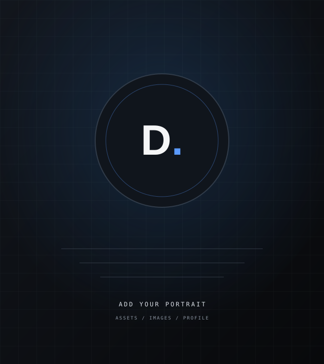

Frontend
Clear, accessible interfaces that work across screen sizes.
Available for selected projects
Websites · AI · Automation
I’m Daniel, a website developer and AI automation engineer studying artificial intelligence with a minor in cybersecurity. I build useful web experiences and practical automations for real problems.
A little about me

I care about the part where a good idea becomes something people can actually use.
I’m a website developer and AI automation engineer, and an artificial intelligence student with a minor in cybersecurity. My work brings together thoughtful web experiences, practical software, and automation that fits the way a business works.
I’m also certified in web and app development, AI and machine learning engineering, software engineering, and data analysis. I keep learning, stay curious, and focus on building solutions that are clear, useful, and dependable.
Capabilities
The right tools depend on the problem. These are the areas I’m learning and building with.
Clear, accessible interfaces that work across screen sizes.
Application logic, integrations and dependable data foundations.
Connecting language models and workflows to useful tasks.
Version control, local development and practical deployment.
A growing toolkit, not a list of expert-level claims. See the full skills overview
Selected work
A few directions I’m exploring across web products, AI and automation. These are clearly marked concept previews; I’ll add live case studies as projects are ready to share.
A concept for matching a candidate profile with relevant roles and surfacing useful context for each opportunity.
Explore conceptA flexible workspace concept for bringing everyday business tasks, records and automations together.
Explore conceptA workflow concept that gathers information, applies AI-assisted processing and routes the result to the next step.
Explore conceptApplied AI
AI is most useful when it has the right context, tools and boundaries. I’m interested in engineering practical features around real workflows—not adding AI just to say it’s there.
Connected workflows
Automation connects the tools people already use and handles repeatable steps with care.
From a form submission to a useful notification, a well-designed workflow can move information safely and predictably.
How I work
Understand the problem and who it affects.
Shape a clear scope and practical solution.
Develop in small, useful increments.
Check functionality, accessibility and performance.
Deploy carefully and make the handoff clear.
Use real feedback to guide what comes next.
Notes from the process
A practical look at models, tools, context and the control loop between them.
Read the noteSmall choices in structure, assets and interaction can make a website feel better.
Read the noteHow to find a useful first workflow and keep people in control.
Read the noteJournal previews are drafts, not published articles. Open the notes page
Have a project in mind?
Tell me what you’re working on. We can figure out a useful next step together.